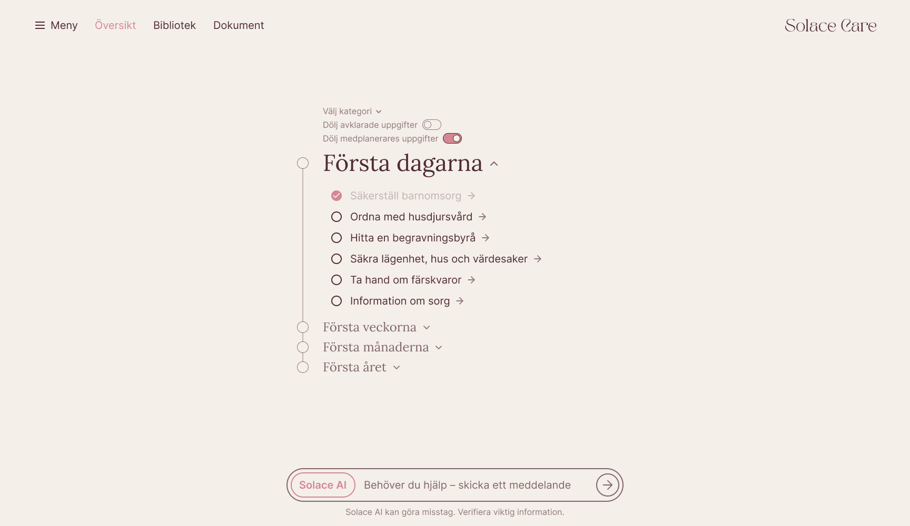
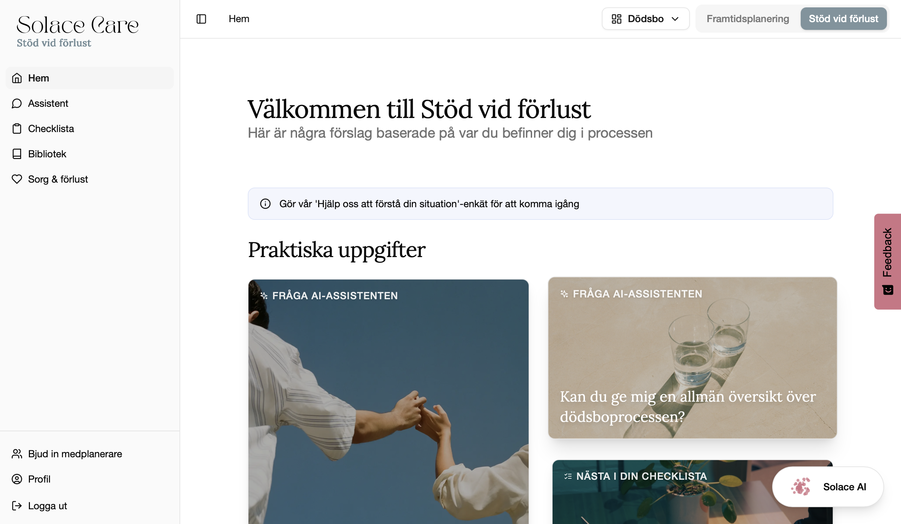
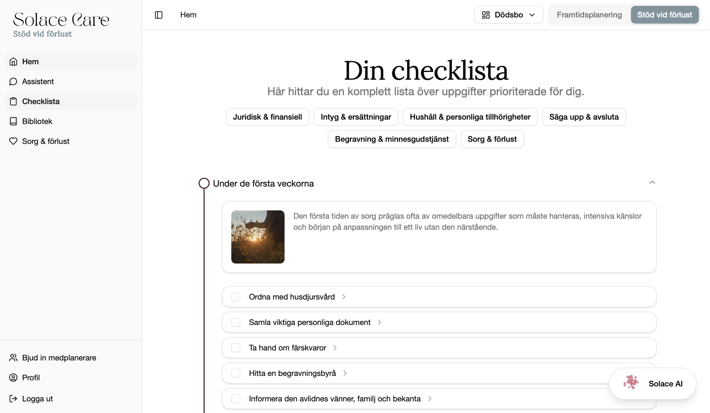
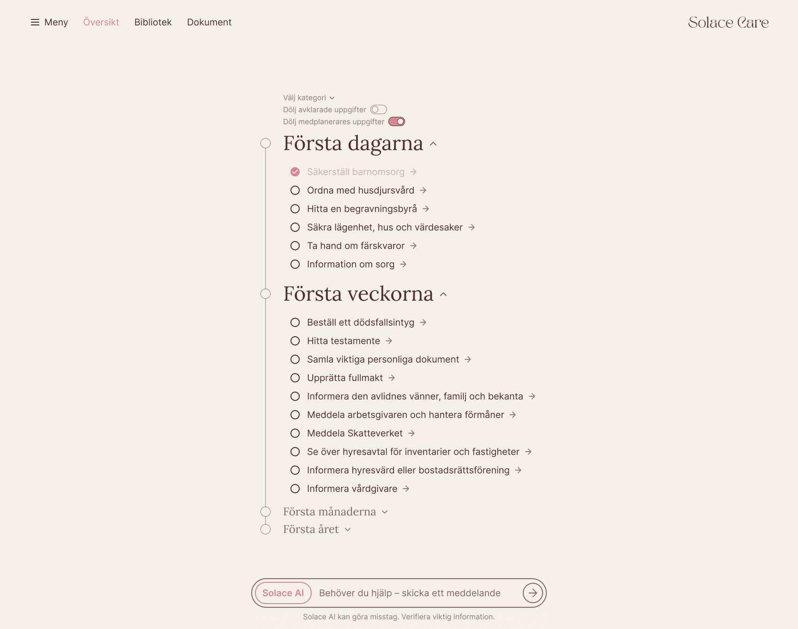
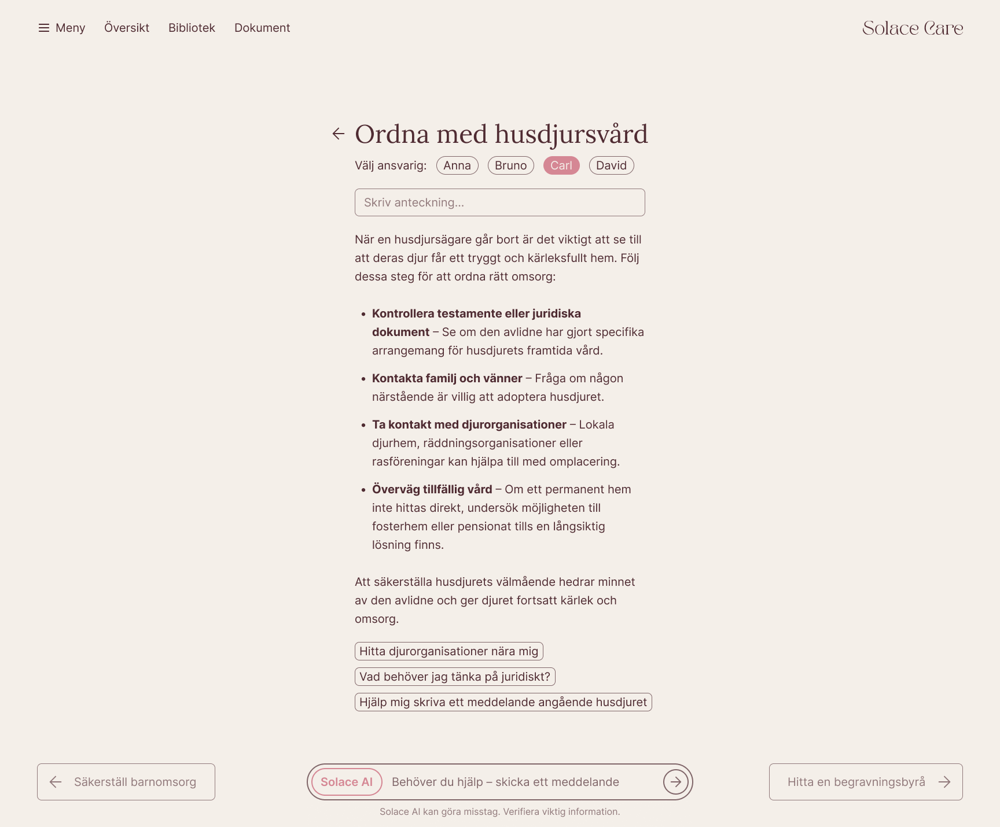
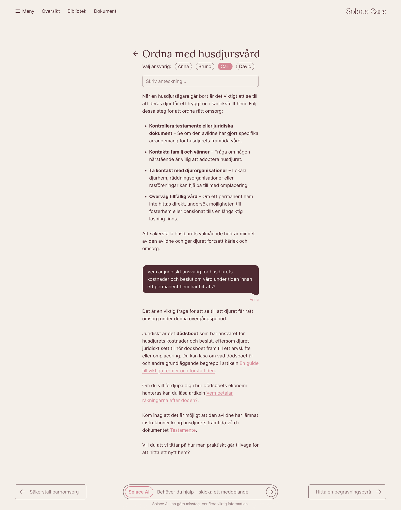
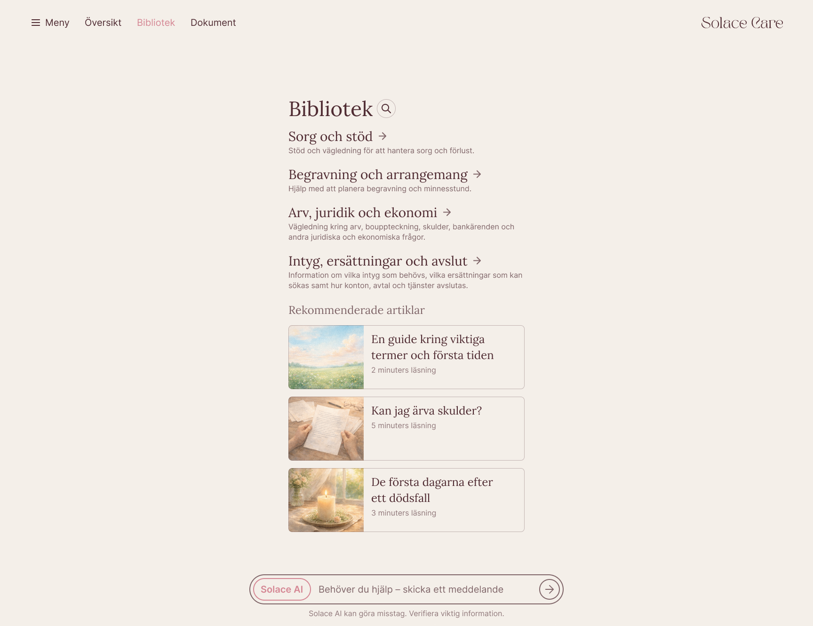
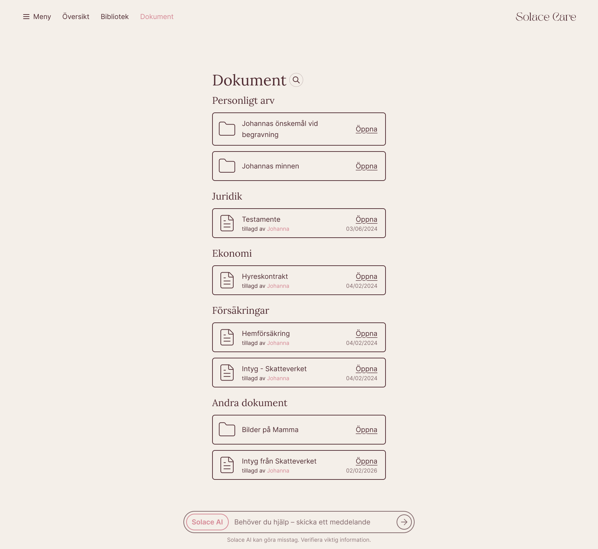

Solace Care Redesign
Solace Care is a planning and coordination tool for people who have recently lost someone. This redesign focuses on reducing cognitive load, integrating AI more deeply into the task flow, and making shared planning easier.
Opportunities for improvement
- The original interface overwhelms the user with task cards, AI tools, and support content at once.
- The AI assistant lives on its own separate page, disconnected from the users real context.
- Collaboration is limited: co-planners have no way to communicate on the platform.


Simplified navigation
The home page was removed entirely. The checklist is now the primary entry point and the first thing users see when they open the app. This eliminates an entire layer of navigation and puts users directly in front of their tasks.
The checklist keeps the original timeline structure but adds a new section for the very first days after a loss, when the need for low cognitive load is most important. Each time period can be expanded or collapsed, letting users focus on what's relevant without being overwhelmed by everything that comes later.

Collaboration
End-of-life planning is rarely done alone, so the redesign adds a shared notes panel to each checklist item, giving co-planners a place to coordinate directly within the task they're working on rather than switching to a separate messaging tool without context.
Similarly to the original design, users can also assign tasks to themselves or co-planners. On the Checklist page, seen above, users can choose to hide all checklist-items which are not their responsibility.

AI integration
In the original design, the AI assistant lived on its own page, separate from the tasks and content it was meant to support. The first step was to bring it into the task flow: a persistent chat panel now appears across all pages which is able to respond directly to the context the user is viewing. The assistant can reference checklist items, support articles, and documents uploaded by the user or their co-planners.

But a chat bar still puts the burden on the user to know what to ask. For someone navigating grief, that blank input field is its own form of cognitive load. The next step was to add contextual action buttons at the end of each task. Structured prompts like "Vad behöver jag tänka på juridiskt?" guide the user towards the most useful actions without requiring the user to formulate them. The chat remains available, but the buttons make the AI's capabilities visible and accessible where they're most relevant.
Support content and documents
The library view organizes support content such as articles, guides, and recommended reading into browsable categories with an newly added search feature.

A dedicated documents page was added to give users an overview of important files in one place. In the original design, documents uploaded by co-planners or belonging to the deceased were located in an area of the site which was difficult to discover and navigate to.
